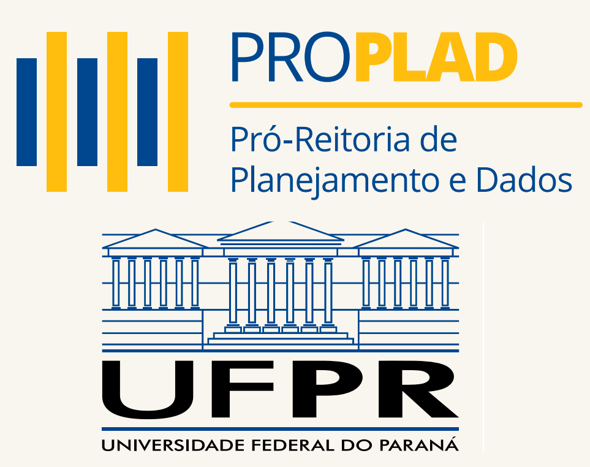
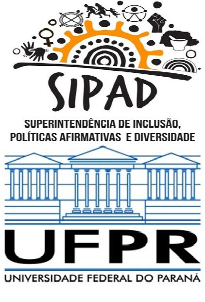
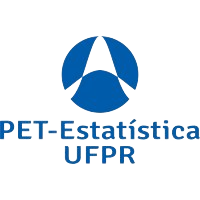
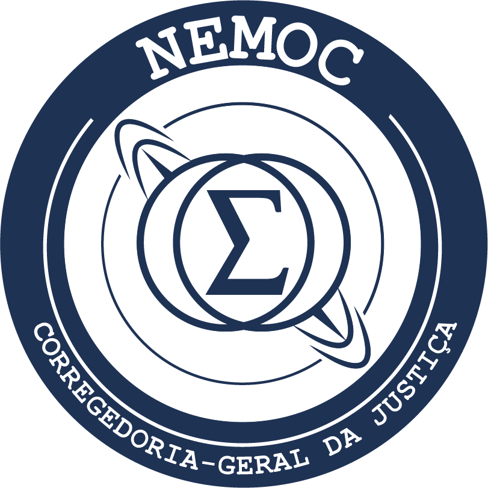

Trajetória Profissional

Jan 2025 - Atual
Coordenador de Estatística e Ciência de Dados
Coordenador da Coordenadoria de Estatística e Ciência de Dados (CECD) vinculado à Pró-Reitoria de Planejamento e Dados (PROPLAD).
Consultor, Assessor, Revisor & Instrutor
Consultoria e Assessoria: Prestação de serviços especializados para empresas e projetos.
Revisão Científica: Análise e aprimoramento de trabalhos acadêmicos e científicos.
Aulas e Cursos: Ministração de aulas e cursos em diversas instituições e níveis.
Revisão Científica: Análise e aprimoramento de trabalhos acadêmicos e científicos.
Aulas e Cursos: Ministração de aulas e cursos em diversas instituições e níveis.

2024 - 2025
Estatístico
Estatístico lotado na Superintendência de Inclusão, Políticas Afirmativas e Diversidade (SIPAD) da Universidade Federal do Paraná.

Professor Universitário
Professor substituto da carreira de magistério superior. Lotado no Setor de Ciências Exatas , Departamento de Estatística, Laboratório de Estatística e Geoinformação, Universidade Federal do Paraná. Disciplinas ministradas: CE301: Estatística Básica, CE003: Estatística II, CE009: Introdução à Estatística, MEPC: Métodos Estatísticos em Pesquisa Científica (pós graduação).
Professor Conteudista
Professor conteudista na escola online de ciência de dados Ômega Data Academy trabalhando com: revisão e elaboração de materiais didáticos (e-books, slides, textos, figuras, códigos R, questões de fixação, etc), gerenciamento de plataformas de ensino online, auxílio na criação de cursos síncronos na área de Ciência de Dados, adaptação de cursos presenciais para autoinstrucionais na área de Ciência de Dados.

Bolsista CAPES
Bolsista contemplado pelo Programa de Demanda Social (DS) da Fundação Coordenação de Aperfeiçoamento de Pessoal de Nível Superior (CAPES) para realização de mestrado em programa de pós-graduação stricto sensu oferecido por Instituição de Ensino Superior (IES) públicas.
Estágio de Prática em Docência
Acompanhamento e auxílio da rotina didática da disciplina transversal de pós graduação intitulada Métodos Estatísticos em Pesquisa Científica, na Universidade Federal do Paraná. As atividades consistiam em apoio e desenvolvimento de material didático utilizado na disciplina, atendimento aos alunos por e-mail e durante as aulas ao vivo via chat, desenvolvimento de atividades avaliativas semanais, manutenção do banco de questões da disciplina, conduzir eventuais aulas.
Estagiário de Inteligência de Crédito
Programa de estágio do Banco Bradesco S.A realizado no Departamento de Inteligência de Crédito - Portfólio Produtos com Garantia Pessoa Física. Principais atividades: apoio às tarefas de desenvolvimento, manipulação e tratamento de bases de dados, auxílio a processos de automação e criação de estratégias de crédito, monitoramento de estratégias implantadas, geração e manutenção de relatórios analíticos dos portfólios, auxílio no mapeamento e otimização de processos de gestão de crédito, otimização de processos automáticos implementados em SAS.

2017 - 2019
Bolsista
Membro bolsista do Programa de Educação Tutorial do curso de Estatística na Universidade Federal do Paraná atuando no desenvolvimento e manutenção das atividades de Ensino, Pesquisa e Extensão relacionadas a Estatística na Universidade Federal do Paraná.
Monitor de graduação
Monitor da disciplina de Modelos Lineares Generalizados, ofertada no segundo semestre de 2017 na Universidade Federal do Paraná atuando no apoio e desenvolvimento de material didático e atendimento aos alunos.

2016 - 2017
Estagiário de Estatística (TJPR)
Programa de estágio do Tribunal de Justiça do Paraná realizado no Núcleo de Estatística e Monitoramento da Corregedoria Geral da Justiça. Atividades: coletar e analisar dados para aferir a produtividade das Secretarias e dos Magistrados de todo o estado do Paraná, acompanhar procedimentos de monitoramento implantados com foco em Secretarias e Magistrados, identificar os principais problemas que dificultam a prestação jurisdicional, verificar índices que auxiliam a Presidência e a Corregedoria Geral da Justiça na elaboração de procedimentos e acompanhamento do cumprimento das metas impostas pelo Conselho Nacional de Justiça (CNJ), elaborar estudos sobre a necessidade de força-tarefa e designações pontuais de Magistrados e servidores em Comarcas consideradas deficitárias, bem como necessidade de criação de novas Unidades Judiciárias.